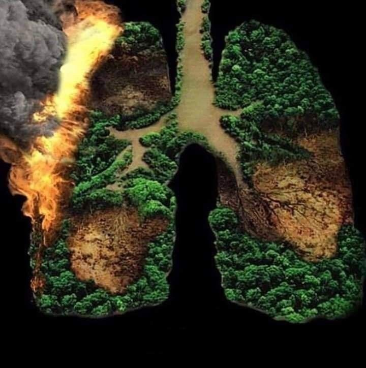

Impact of the COVID-19 Pandemic on the Environment
31.05.2020
Three and half billion people are confined in some way around the planet. That is almost half of the world’s population. The worldwide disruption caused by the Covid-19 pandemic has resulted in numerous impacts on the environment. Quarantine and social distancing measures have been implemented to counter the onset and rapid spread of COVID-19 around the world. Air traffic has nearly ceased; non-essential businesses have closed, the number of people on the road is much lower than normal. Due to this drastic alteration in human behavior, changes in the environment are beginning to occur.
Air Quality

Due to corona virus pandemic’s impact on the travel and industry, many regions and the planet as a whole experienced a drop in air pollution.
Nitrogen Dioxide (NO2) is a pollutant, the primary sources being the burning of fossils fuels, automobiles and industry. Empty roads leading the reduction in pollution in vehicles. Following images from European Space Agency (ESA) shows the difference in NO2 concentrations between March 2019 and March 2020.


But quarantine measures had no effect on level of fine particles which are most dangerous to our health. Largely due to agriculture spraying and individuals heating their homes, studies suggests these fine particles aggravate the health impacts on COVID-19 virus.
Sarah Ladislaw from the Center for Strategic & International Studies argued that reductions in emissions due to economic downturns should not be seen as beneficial, stating that China's attempts to return to previous rates of growth amidst trade wars and supply chain disruptions in the energy market will worsen its environmental impact . Report released by the NGO global energy monitor found that first three weeks of march china had proved plans for cofired power capacity than in all 2019.
Water Quality
In Venice, the water in the canals cleared and experienced greater water flow and visibility of fish. The Venice mayor's office clarified that the increase in water clarity was due to the settling of sediment that is disturbed by boat traffic and mentioned the decrease in air pollution along the water ways.
Deforestation and Reforestation
The disruption from the pandemic provided cover for illegal deforestation operations. This was observed in Brazil, where satellite imagery showed deforestation of the Amazon rainforest surging by over 50 percent compared to baseline levels. Unemployment caused by the COVID-19 pandemic facilitated the recruitment of laborers for Pakistan's 10 Billion Tree Tsunami campaign to plant 10 billion trees – the estimated global annual net loss of trees over the span of 5 years.
